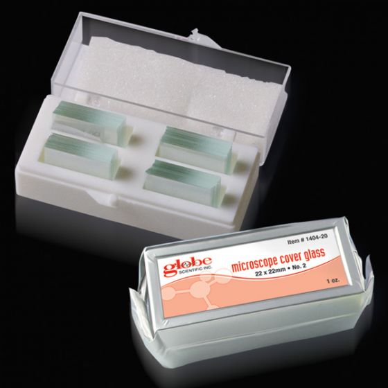
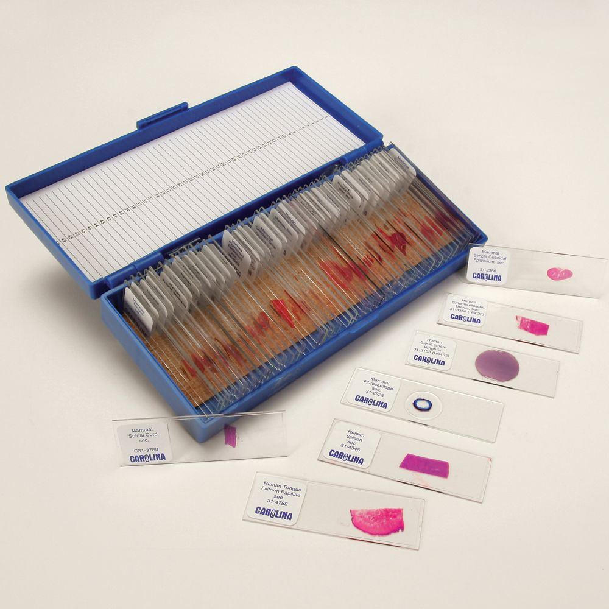
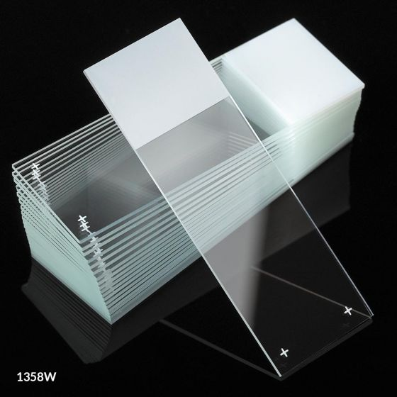

Todo aquello que sea el objeto de interés o de estudio. Es importante no confundirlo con la muestra, ya que esta última es una parte representativa del analito, o aquello que lo contiene.
Por ejemplo, suponga que le extrae sangre a un individuo para luego estudiar sus eritrocitos —también llamados hematíes o glóbulos rojos—. En este caso, la muestra sería la sangre, y los eritrocitos, el analito.
Pequeña pieza de vidrio que se coloca sobre la muestra, la cual descansa —a su vez— sobre el portaobjetos.
Tiene la función de aplanar la muestra, facilitando así su observación, además de fijarla y mantenerla estable. También disminuye su ratio de evaporación y proteje al espécimen de factores adversos, como la contaminación por partículas de polvo.
Suelen ser de forma cuadrada (22 x 22 mm), aunque también existen presentaciones rectángulares y cirulares. Su grosor puede variar, por lo general entre los 0.14 y 0.21 mm.
El grosor del cubreobjetos es muy importante, ya que los objetivos requieren de cierto grosor para garantizar la calidad de la observación. Este valor suele venir grabado en el cuepor del objetivo y suele ser de 0.17 mm, que es la medida estandarizada.
El acabado del cubreobjetos también es un factor a tener en cuenta en la experiencia de observación, por lo que —siempre que le sea posible— trate de utilizar sólo cubreobjetos de excelente calidad.

Figura 6.1 Cubreobjetos de vidrio marca Globe®, de excelente calidad y medidas estandarizadas.#
Conjunto de métodos y técnicas que permiten la observación de objetos que no son visibles a simple vista.
Anton van Leeuwenhoek (1632-1723) es considerado el padre de la microscopía, al desarrollar —él mismo y por sus propios medios— lentes con una potencia y una calidad nunca antes vistas en su tiempo —e incluso hasta muchos años después de su muerte—. Se le deben a él importantes descubrimientos, los cuales sentaron las bases de la Microbiología moderna: fue la primera persona en observar células, protozoarios, núcleos, eritrocitos, espermatozoides, etc. Hasta que él lo observó con sus propios ojos, la humanidad ignoraba por completo la existencia del mundo microscópico.
Figura 6.2 Retrato de Anton van Leeuwenhoek. Hombre brillante que, sin haber recibido educación científica formal, revolucinó al mundo con sus descubrimientos y observaciones.#
Todo aquello que constituye una parte representativa del analito (o que lo contiene).
La muestra puede ser cualquier cosa —una gota de agua o de sangre, fibras de tela, cabello, pequeños insectos, tejido, etc.—, siempre y cuando sus características físicas permitan su observación en un microscopio.
En algunos casos la muestra debe ser preparada mediante distintos procesos antes de su observación:
Procedimiento
Descripción
Corte
Para cortar muestras que son demasiado gruesas. Por lo general se emplea para ello un microtomo, que es un dispositivo especializado para realizar cortes muy delgados de manera uniforme.
Extendido o frotis
Extiende la muestra en la superficie del portaobjetos. Esto dispersa al analito de sus aglomeraciones y facilita su análisis morfológico individual.
Fijación
Puede ser química o térmica. Detiene la actividad celular y algunos procesos, como la autolisis, la descomposición y la putrefacción.
Radiación
En técnicas de iluminación, como la fluorescencia, hace que ciertas partes de la muestra destaquen sobre otras.
Tinción
Hace visibles objetos de interés que tienen poco o nulo pigmento natural.
Uso de agentes retardantes
Disminuye la velocidad de movimiento de algunas muestras vivas sin matarlas. Algunos protozoarios, por ejemplo, son demasiado rápidos y ágiles para su observación directa.
Las muestras puede obtenerlas y procesarlas usted mismo —si tiene los conocimientos y medios adecuados— o puede adquirirlas ya procesadas y listas para su observación. Algunos comerciantes venden sets de muestras en función de alguna temática especializada —clínica, forense, histológica, parasitológica, etc.— o también de forma general y mixta.

Figura 6.3 Set de muestras médicas histológicas marca Carolina®, de excelente calidad.#
Soporte sobre el que se coloca la muestra. Suele ser de vidrio y de dimensiones estandarizadas (25 x 75 mm y grosor de 1.0 mm).
Existen diferentes modelos —con esquinas en 90°, recortadas o de seguridad; con una o dos oquedades; con o sin etiqueta; eléctricamente cargados o no— y distintos grados de calidad. Siempre que le sea posible, utilice portaobjetos de vidrio y de la más alta calidad, ya que el acabado repercute en la experiencia de la observación y en la realización de algunos procedimientos, como en el caso de los extendidos o frotis.

Figura 6.4 Portaobjetos de vidrio Globe Scientific’s Diamond®. Excelente calidad, esquinas en 90°, área escarchada para identificación y cargados eléctricamente para facilitar la adhesión de celulas y tejido.#